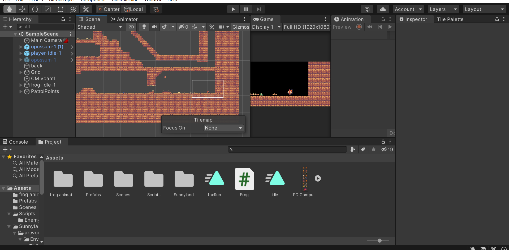

Academics Work
Essay
Slide show
Shop Work
This assignment was a final assignment after learning about arrayLists. We had to create arraylists to store the data relevant to that game and also be able to access and edit that data. We used 2D array lists to create the grid that the board would be on. In the arrays we stored objects we created that held all of the data for that location on the grid. To access and edit these I gave them a nested for loop so go through the arraylist and find the cell in the correct location.
This year was my first year working in java or any other object oriented programming language. At the start of the year I struggled with the concepts of classes and constructors. By the end of the year I was comfortable enough with these concepts that I was able to make this battleship game. In the assessment I also used inheritance. When I first learned inheritance I struggled with it, but during this assignment I made use of them for the cells.
Click here to download
Related Work
This project is a 2D platformer That I made in my related game design class. The objective of this assignment was to learn and implement the different aspects of platform games. To complete this assignment I had to follow along with my teacher's demonstrations as well as make my own creative decisions. This was a challenging assignment because of the amount of new things being taught to complete. I enjoyed the more creative parts of this assignment and feel once I got the hang of the new concepts I started to excel.
This year was my first year working with Unity. In relation, I learned about many different aspects of game design. This project introduced many new challenges and concepts. Before this project, I only knew the basics of Unity. I could control the movement of spite, detect collisions, and other simple concepts like those.
From this project, I learned many different and unique concepts important to game design. The first thing I learned was how to make animations for the sprites. I also learned how to use a tilemap to make the background for the game. An important aspect of this assignment was designing a playable and intuitive first level.
DDM
For the DDM we had to implement many things that we learned throughout the year. The first thing I had to do was make a utils class. This class was made to read from the file and add all of the file's information to an object. The utils class creates an object for each line in the file. After the Utils class was completed I had to make the Crossword class. This class was used to create a crossword puzzle based off of the information in the file. This class only had a constructor and a method for printing. The constructor made a 2d array of Square objects that were assigned a character for what they should display. I also made the Main class. In this class I made a method to create a 2d array of booleans to pass into the Crossword constructor. I then also made a methods for getting all clues or specific clues. In these methods I used input validation to made sure it would not crash my program. Then i made a method for user guesses. This method asks the user for the clue that they would like to make a guess for. Then if they selected a valid clue it asks them for their guess. I then make sure that their guess is correct. If it is correct then the crossword display updates. Otherwise it checks if the guess is the same length and would interfere with the previous guesses that are already being displayed. if it does and the length is the same then the display will update. If not nothing happens.
Click here to download